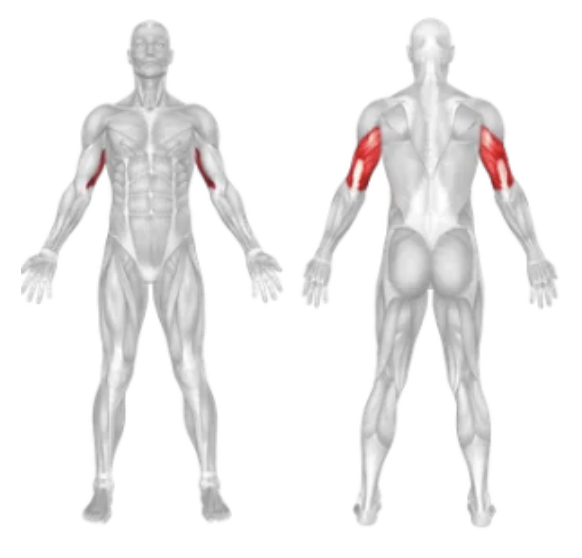

Setup
- Attach a rope handle to the high pulley of a cable machine.
- Stand upright facing the machine with your feet shoulder-width apart.
- Grab the rope with a neutral grip (palms facing each other), keeping your hands close together.
- Keep your elbows tight to your sides and upper arms stationary throughout the exercise.
- Engage your core and lean slightly forward for balance.
Execution
- Push Down: Exhale and push the rope down by extending your arms fully, separating the rope ends at the bottom.
- Squeeze: At the bottom, squeeze your triceps for a second with your hands turned outward.
- Return Slowly: Inhale and return to the starting position with control, stopping when forearms are parallel to the floor.
Tips for Effectiveness
- Control Each Rep: Avoid using momentum — focus on slow, controlled movements.
- Don’t Let Elbows Drift: Keep elbows locked in place to isolate the triceps.
- Separate the Rope: At the bottom, pull the rope apart to maximize contraction.
- Use a Full Range: Extend fully and return slowly for maximum tension.
Benefits of Rope Pushdown
- Targets All Tricep Heads: Emphasizes the lateral and long heads effectively.
- Improved Definition: Helps carve out arm shape and size.
- Joint-Friendly: Rope allows for natural wrist movement, reducing strain.
- Versatile & Adjustable: Suitable for all fitness levels with weight adjustment.
Muscles Worked in the Rope Push Down
